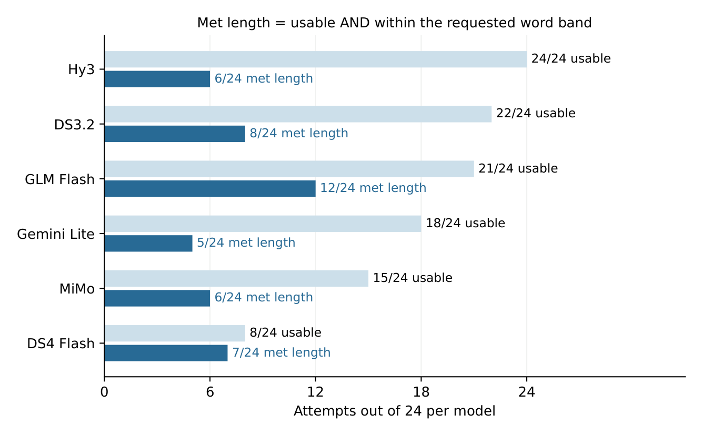
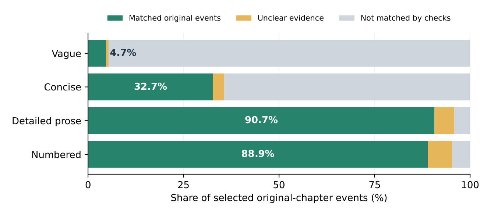
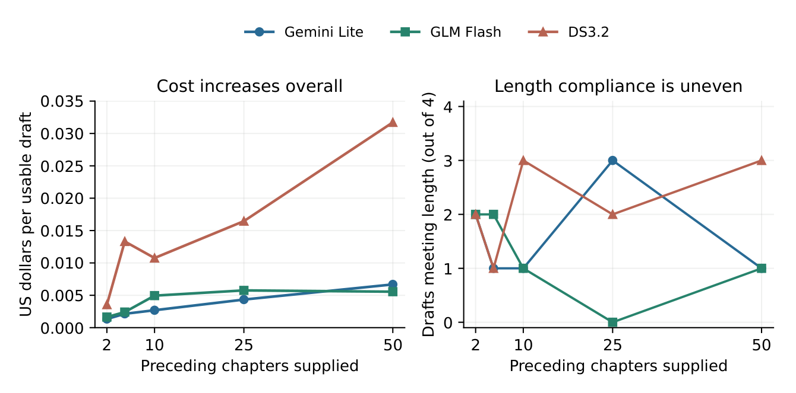
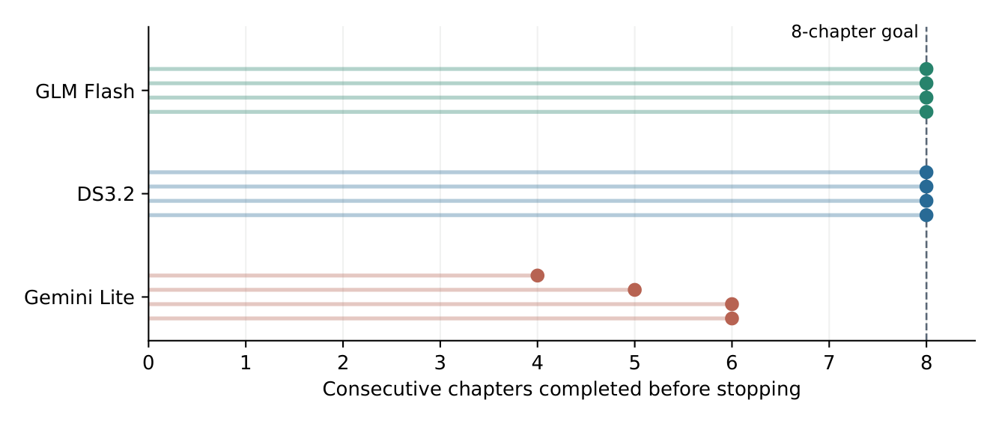

Preprint · September 2026
Choosing Affordable Language Models for Serial FictionInstruction Following, Creative Writing, and Story Memory
Published on Zenodo on 26 September 2026, DOI 10.5281/zenodo.22977925.
Abstract
Our goal is to identify an affordable set of language models and prompting practices that can help a broad community of authors begin and sustain AI-assisted serial fiction. We compare six models priced below one US dollar per million input and output tokens through 687 chapter-generation attempts, covering instruction detail, output constraints, reasoning settings, story bibles, retrieval, history compression and sequential continuation. A selected novel provides a common reference.
We distinguish following the author’s brief from resembling the reference and from writing an engaging scene. In a 144-attempt instruction-design comparison, 108 drafts were usable, but only 44 also met the length requirement. Reference-event coverage increased from 4.7% with vague direction to 90.7% with detailed prose instructions; numbering the same instructions yielded 88.9% and no consistent advantage across scenes. DeepSeek V3.2 led the selected detailed-instruction checks, GLM 5.3 Flash was the most balanced creative-scene candidate in exploratory AI readings, and Tencent Hy3 was the most reliable writer in that comparison. Story-bible updates introduced different risks, including retained contradictions and unexecuted repairs. The findings support choosing models by role, specifying causal requirements and creative freedom separately, and validating both chapters and memory updates. They are practical starting points from a single-novel study, not a universal literary ranking.
Key results
| Result (one selected novel, six models under $1/M tokens) | Value reported in the paper |
|---|---|
| Writing attempts in the study | 687 across five experiment groups |
| Instruction-design test: usable drafts / also met length | 108 of 144 usable; 44 met the 1,233–1,667-word band |
| Original events supported, by brief | Vague 4.7%; concise 32.7%; detailed prose 90.7%; numbered 88.9% |
| Numbering the same instructions (paired, scenes A/B/C) | −4.2, −4.8 and +3.7 percentage points: no consistent advantage |
| Full-brief requirements supported (detailed + numbered) | DS3.2 97.0% (12 of 12 usable); Hy3 93.3% (12 of 12 usable) |
| Hy3 with reasoning disabled vs a 1,024-token reasoning hint | Usable 2/8 → 8/8; met length 0/8 → 6/8; median time about 80 → 18 s |
| Exact output constraints, all six rules together | 1 of 36 stress-test attempts (a DS4 draft) |
| Summary-heavy vs full history (50 prior chapters), cost per usable chapter | −80% Gemini Lite; −56% GLM; −71% DS3.2 |
Numbers from the abstract, Tables 2, 4, 5, 6, 8, 9 and 15, and Section 3.3. Literary judgments in the paper are exploratory AI readings, not a human reader panel.
1. Introduction
An author needs more than fluent paragraphs from a chapter-writing assistant. The model must carry out planned events, respect what characters know, sustain a useful voice, write responsive dialogue, and leave the story in the intended state. It must also complete the chapter at a predictable length and preserve facts for future installments. An inexpensive model that produces attractive prose but regularly stops early may be less useful than a slightly slower model that reliably finishes.
This paper asks which affordable models suit those different responsibilities and how authors should instruct them. We examine five practical questions: how much detail a brief needs; whether its structure matters; which models are promising for different writing roles; whether a story bible actually preserves correct information; and how cost and completion change with longer histories and repeated continuation.
We use a common writing application with access to preceding chapters and a structured story bible. A story bible is a persistent record of characters, relationships, capabilities, locations and unresolved events. The application can retrieve relevant history and write updates to this record. It is the surrounding software, rather than the model alone, that stores that information and calls those tools. This setting measures the model together with its configuration and tools, closer to an author’s workflow than a single isolated prompt.
The central distinction is between three outcomes. Instruction compliance asks whether the draft does what the author requested. Reference distance asks how much it differs from the selected source chapter. Writing quality asks whether the resulting scene is effective. A vague brief can legitimately produce a very different plot; a detailed brief can produce the right events in dull prose. Treating those outcomes as interchangeable leads to misleading recommendations.
2. Related work: LLMs and creative writing
2.1 Creative assistance and literary quality
Evidence about AI-assisted human writing and fully model-generated fiction answers different questions. Doshi and Hauser found that access to AI-generated ideas improved evaluations of human-written short stories, particularly for writers with lower baseline creativity, while making stories more similar to one another [5]. The result suggests a useful role for ideation support, alongside a risk of converging on familiar ideas. It does not establish that an autonomous model can sustain a distinctive novel over many chapters.
For model-generated stories, Chakrabarty et al.’s Torrance Test of Creative Writing (TTCW) uses fourteen tests covering fluency, flexibility, originality and elaboration. In their expert assessment of 48 stories, the tested LLMs lagged professional authors, and automated assessors did not positively correlate with expert judgments [2]. These findings concern the models and tasks studied, rather than a permanent limit on all later systems. They show why readable prose alone is insufficient evidence of literary success. In our evaluation, creative completion, character portrayal, dialogue and scene construction therefore remain separate dimensions rather than being inferred from event coverage.
2.2 Controlling stories and sustaining context
CS4 examines story generation under varying numbers of writing constraints [1]. It motivates treating constraint satisfaction as a distinct part of creative performance. Our instruction comparison separates adding required content from reorganizing the same content: a detailed brief can narrow plot freedom while leaving dialogue, imagery and scene realization open. A model’s divergence from a reference is consequently meaningful only in relation to what the author actually specified.
Long-form generation also depends on the surrounding workflow. Re3 combines an overarching plan, repeated prompting with the plan and current story state, candidate selection and consistency revision. Human evaluations found improvements in plot coherence and relevance to the premise over direct generation with the same base model [6]. This supports evaluating planning and revision alongside model choice. It does not establish the effectiveness of our particular bible or retrieval implementation.
Memory introduces its own errors. Lost in the Middle reports that models’ use of relevant information can depend on its position in a long context [3]. FABLES studies book-length summarization rather than chapter generation: its human annotations identify unfaithful claims about events and character states, while the tested automated raters correlate weakly with human faithfulness judgments [7]. For serial fiction, this motivates checking whether summaries and bible updates preserve the facts needed later. A longer context window or a successfully saved summary is not itself a validated measure of narrative consistency.
2.3 Evaluating creative writing reliably
LitBench evaluates automated creative-writing judges against 2,480 human-labeled story comparisons. Its strongest tested off-the-shelf judge agreed with human preferences on 73% of comparisons; trained reward models reached 78% [8]. These are judge-agreement results, not rankings of the best fiction-writing models. They illustrate both progress in automated evaluation and the remaining gap between a convenient score and human preference.
Taken together, these studies support a practical but qualified view: LLMs can assist ideation and draft production, while sustained coherence, distinctive choices and dependable evaluation require separate attention. Our contribution is an affordable-model comparison within a chapter-writing workflow, with explicit separation of output reliability, instruction adherence, reference-event coverage and exploratory literary assessment. Our AI readings cannot establish reader preference, and the external studies do not independently validate our model recommendations. OpenRouter usage rankings guide the model sample; popularity is not evidence of literary quality [4].
3. Study design
3.1 Selected text and chapter tasks
We selected one novel as the common basis for controlled continuation tasks in English. Eight evaluation positions span the available narrative history. Three focal scenes, labeled A, B and C, support the more detailed instruction-design comparison. They vary in their balance of external action, internal reasoning and social interaction, but they remain cases within one novel, not independent genres.
For reconstruction tasks, writers receive two preceding reference chapters and a shared brief derived from the target chapter. The target prose is withheld. This tests realization of a supplied plan, not prediction of an unknown author’s next chapter. Some briefs and summaries are model-assisted annotations, with direct inspection of selected facts and disagreements. They are not comprehensive human gold labels. The text had informed application development, and possible exposure during model training is unknown.
The usual target length is 1,450 words, with an acceptable band of 1,233–1,667, including the heading. Shared requirements specify English prose, past tense, a restricted third-person viewpoint, and a first line in the form Chapter N: Title. Continuation paths instead request approximately 1,000 words per step. The results are reported at the level of requirements and model behavior.
Scene labels refer to different task emphases: A centers on external actions and their motives, B on internal reasoning and capability limits, and C on social interaction and changing reactions. They are three cases from one novel, not different genres or amounts of history. All three receive two preceding chapters in the instruction-design experiment. Figure 1 shows what the writer receives and what is withheld.
![Diagram of the instruction-design setup. Three focal scenes from one selected novel: A, external action (actions and motives, unresolved endpoint); B, internal reasoning (decisions and causes, capability limits); C, social interaction (dialogue and reactions, relationship changes). Shared context (two prior chapters plus curated bible) and one of four briefs (vague, concise, detailed, numbered) feed the writing application (one of six models, two samples per condition), which produces a generated chapter checked for completion and length, events and selected readings. The original target is withheld: the writer receives its brief, not its prose, and selected events are compared with the draft. 6 models × 3 scenes × 4 brief types × 2 samples = 144 writing attempts.](fig/fig1-instruction-design.png)
3.2 Models, prices and inference settings
The model sample is purposive: six inexpensive models selected with reference to OpenRouter usage rankings and available prices. At the 25 September snapshot, GLM Flash, DS4 Flash, MiMo and Hy3 appeared at ranks 1, 4, 6 and 8 in the displayed trailing-30-day ranking. Gemini Lite and DS3.2 are comparison models rather than members of that displayed top ten. We do not claim an exhaustive search of every inexpensive endpoint.
| Short name | OpenRouter model ID | Input | Output |
|---|---|---|---|
| DS4 Flash [9] | deepseek/deepseek-v4-flash-0731 | 0.030 | 0.320 |
| GLM Flash [10] | z-ai/glm-5.3-flash | 0.045 | 0.140 |
| MiMo [11] | xiaomi/mimo-v2.5 | 0.140 | 0.280 |
| Hy3 [12] | tencent/hy3 | 0.132 | 0.528 |
| Gemini Lite [13] | google/gemini-2.5-flash-lite | 0.100 | 0.400 |
| DS3.2 [14] | deepseek/deepseek-v3.2 | 0.269 | 0.400 |
The short names in Table 1 are used throughout. Endpoint documentation is cited for each exact model identifier; it documents the served model, not independent evidence of creative-writing quality. Live catalog prices can differ from the recorded study rates. Prices and routing conditions are time-sensitive. Requests enforce provider input and output rates below $1/M, allow provider fallback within the requested model, and do not substitute another model. Experiments were collected in September 2026; a model’s observed behavior can vary with the serving route and collection window.
Generation uses temperature 0.7 and top_p 0.95. The application retains its retrieval tools and tool-round limits except in the explicit tools-disabled comparison. A chapter attempt can contain several API calls. The reconstruction benchmark requests a 1,024-token reasoning allowance, which is a provider-dependent hint. Separate tests examine application defaults and disabled reasoning. The instruction-design benchmark uses disabled reasoning for five models and a 1,024-token allowance for GLM, whose endpoint requires reasoning. Comparisons therefore concern model–configuration combinations, not model architecture alone.
Requests allow at most 8,192 output tokens; individual application calls can have smaller budgets. Full-attempt time includes tool rounds and ordinary application retries. Batches use bounded concurrency, while each continuation path proceeds sequentially. Task order is shuffled where applicable, and failed attempts remain in the results. Replicates are stochastic samples, not guaranteed identical-seed reproductions.
3.3 Experiment inventory
The study contains 687 writing attempts across five groups. These are different tasks, not a denominator for one pooled quality score:
- Writing and instructions (300): reconstruction (96), instruction detail and format (144), exact output constraints (36), and briefs without enumerated events (24).
- Model settings (84): reasoning defaults and disabled reasoning (72), plus configuration checks (12).
- Memory and retrieval (183): bible conditions (48), history depth (60), summary compression (24), retrieval disabled (24), canon placement (24), and recovery repeats (3).
- Independent continuation checkpoints (24): supplied reference history rather than the model’s own previous drafts.
- Repeated continuation (96): twelve short paths (89 observed attempts) and one planned 50-step path (7 observed attempts).
Shared controls are reused where specified rather than counted again. Paths stop on defined failures, so attempts can fall short of planned chapter counts. Annotation, evaluation and bible-update calls are separate from these writing attempts.
The memory and continuation comparisons use GLM, Gemini Lite and DS3.2, selected after reconstruction using completion, length, an event diagnostic and cost. That event diagnostic subsequently failed validation. This selection limits those comparisons; they should not be read as proof that excluded models are worse at memory.
The instruction-design test crosses six models, three focal scenes, four brief types and two samples: 6 × 3 × 4 × 2 = 144 attempts. All receive the same two preceding reference chapters and the same compact, curated three-entry bible for the relevant scene. The target outcome is absent from that bible.
The four briefs differ as follows:
- Vague: one direction sentence, plus shared context and output rules.
- Concise: the direction plus four selected plot-development units.
- Detailed prose: all twelve units, including actions, motives, limits and the endpoint.
- Numbered: exactly the same twelve sentences as detailed prose, numbered on separate lines.
Every condition allows compatible dialogue, sensory detail and connective action. A development unit can contain several independently checkable requirements.
Vague-to-detailed comparisons add specific information as well as words. They cannot identify an optimal word count. Detailed-versus-numbered comparison holds sentence content constant and tests organization, spacing and numbering together.
3.4 Memory and continuation tasks
Bible conditions compare no separate bible with an evidence-anchored record and an automatically constructed record. Automatic construction uses a fixed updater. A separate controlled updater test substitutes each of the six models into the same tools and validation rules: two fresh stores per model, each receiving three consecutive reference chapters, for 36 invocations. Before-and-after stores establish whether a real write occurred. Fifty-two additional updater invocations observed during memory construction and continuation provide complementary tool-execution diagnostics.
History-depth tests supply 2, 5, 10, 25 or 50 preceding reference chapters at two evaluation positions. The application’s normal compaction remains active. Full-history and summary-heavy conditions then test alternative representations. A controlled memory task places an author-defined recognition phrase, knowledge boundary and promise in the bible or in early, middle or late history. Exact phrase use is a narrow retrieval check, not a comprehensive consistency test.
Twelve short continuation paths cross three models, two bible conditions and two samples, with eight steps planned per path. Each starts from two reference chapters and thereafter consumes its own generated prose and rolling summaries. The next-chapter brief remains supplied, so the task is guided continuation rather than autonomous plot planning. A path stops on a generation error, truncation or output below 500 words. A separate 50-step path tests the fastest reconstruction finalist, Gemini Lite. Reference-history checkpoints provide 24 independent control attempts. Differences in context and stopping policy remain explicit when interpreting these results.
4. What the measurements mean
4.1 Completion and the output contract
A draft is usable when it contains at least 500 whitespace-delimited words and returns without an error or truncation. This is a minimum operating criterion, not a quality judgment or guarantee of a satisfying ending. Length and exact-heading compliance are separate checks. The stress test additionally requires a scene count, a required phrase, absence of a banned word and an exact ending. Passing each rule often is different from passing all rules together.
Cost per usable output includes known failed writer calls and tool continuations. It excludes shared evaluation work. If an ambiguous timeout lacks reported usage, the tabulated cost is a lower bound. Reported costs sum the API-returned charges for writer calls, including tool rounds, at the routes and cache discounts actually used; they are not reconstructed by multiplying all prompt tokens by the catalog rate in Table 1. Prompt-token totals include cached tokens. Time measures the complete attempt rather than time to first token. A quick error is not a fast completed chapter.
4.2 Instruction coverage and distance from the reference
Read the two scores as two questions. Reference coverage asks, “How many selected events from the original chapter appear here?” Instruction coverage asks, “How many supplied requirements did the draft satisfy?” In Tables 6 and 7, supported means the checker found evidence in the generated text; it does not mean every aspect of the scene is correct. A requirement to leave something unresolved can improve instruction coverage without adding an original event.
For each focal scene, selected propositions describe checkable source events and endpoint conditions. Each judgment is supported, unsupported or unknown. A proposition can require the correct actor, completed action, location or order. A statement of intention does not count as a performed action.
Let Q contain all selected probes, including positive events and negative endpoint constraints (requirements that something must not happen). Let N contain the negative endpoint probes and P = Q \ N the positive reference-event probes. The supplied-instruction set is Ia = {q ∈ Q : the parent instruction of q is supplied in brief a}. Thus Ia is a subset of Q, not necessarily of P. Coverage is
CP = (supported propositions in P) / |P|, CI = (supported supplied propositions) / |Ia|.
Unknown judgments are retained: a possible-coverage upper bound adds them to the numerator. For positive source events, reference distance is D = 1 − CP. With unknowns it is an interval, not a confirmed missing-event rate. A distance of 0.20 means 20% of selected source events were not established by the lower-bound checks; some may be unjudgeable rather than absent.
Vague briefs contain no enumerated plot units, so their supplied-event score is undefined, not zero. Their broad goal, canon and output rules still apply. Negative endpoint constraints are excluded from reference-event distance but included in instruction coverage whenever their parent instruction is supplied. Scenes A, B and C contain respectively 15, 12 and 15 positive event probes, plus 1, 2 and 2 negative endpoint probes. The detailed and numbered briefs supply all twelve units, so their instruction denominators are 16, 14 and 17 probes; their reference-event denominators remain 15, 12 and 15. No positive reference event lies outside those twelve units. Tables 6 and 7 average per-draft fractions over the same usable drafts, but these different denominators explain why their detailed-brief scores differ. For example, 14 of 15 positive events plus one satisfied negative constraint gives 93.3% reference coverage and 15/16 = 93.8% instruction coverage. This is an illustrative calculation, not an additional experiment. Word-level matching-block similarity and five-word phrase overlap provide surface comparisons; neither measures literary quality, semantic correctness or originality relative to training data.
4.3 Evidence quality and literary assessment
Why the checking procedure matters. An early automated grader sometimes gave credit for an action that never happened. We retained only the narrower event checks for the two-chapter instruction comparison, required supporting text, and recorded uncertain cases separately. The checks below describe how that procedure was tested; their small pass counts are not the models’ writing scores. Readers seeking practical guidance can continue to Results or Section 6.
We report semantic event checks only for the fixed-two-chapter instruction-design comparison. Broad automated graders credited omitted actions and partial requirements in full drafts, so their aggregate semantic rankings are excluded. History-length and retrieval comparisons report operating outcomes only. The narrower event checker uses explicit completion criteria and evidence-first judgments. Returned quotations are mechanically matched to the draft, with whitespace and typographic normalization; if separated fragments are returned, every fragment must match. An unsupported affirmative quotation becomes unknown. Matching text is necessary evidence, not proof that the text entails the judgment.
The final GLM event checker passed 12/12 calibration propositions and 4/4 selected new-draft event controls. It scored 8/9 across a broader diagnostic set, with an ambiguous attribution case excluded from qualification of the event measure. On complete reference texts, affirmative counts were 16/16, 14/14 and 15/17. These checks were iteratively developed and refined; they are not independent held-out validation. Accordingly, coverage is a provisional measure of selected requirements, not a certified comprehensive score. Canon-risk screens do not support an automated overall consistency ranking. The checker is also one of the writer models, leaving possible self-model bias.
Six reconstruction drafts were directly inspected for diagnostic failures. A separate exploratory literary review selected eighteen instruction-design attempts, including failed outputs: one sample from every model for a vague scene and two numbered scenes. Twelve were selected before reading, with six added after initial inspection to compare vague and numbered versions of the same scene. Model labels were masked, but styles can reveal identity. The reviewer was an AI research assistant, not a human panel.
Five dimensions use anchored 1–5 scores: creative completion, character portrayal, dialogue, scene construction and prose effectiveness. A score of 1 indicates incompatible, incoherent or ineffective realization; 3 indicates functional but familiar or mechanical writing; 5 requires specific, controlled and causally useful choices. Dialogue is judged for goals, responsiveness and subtext, not its mere presence. Creative additions are rewarded inside the permitted space, not for replacing required events. Scene craft includes blocking, cause and effect, changing stakes and earned endings; this is relevant to screenwriting but does not test screenplay format. Missing output receives no literary score.
5. Results
5.1 Completion, length and operating cost
The reconstruction benchmark produced 78 usable drafts in 96 attempts; 39 also met the length band. GLM, Gemini Lite and DS3.2 each completed 16/16, with GLM meeting the band in 13/16. In the instruction-design benchmark, 108/144 were usable and 44 met the band. These are distinct task families, so their rates should not be pooled into a single model ranking.

| Model | Reconstruction: usable | Reconstruction: met length | Brief test: usable | Brief test: met length |
|---|---|---|---|---|
| DS4 Flash | 14 of 16 | 4 of 16 | 8 of 24 | 7 of 24 |
| GLM Flash | 16 of 16 | 13 of 16 | 21 of 24 | 12 of 24 |
| MiMo | 11 of 16 | 2 of 16 | 15 of 24 | 6 of 24 |
| Hy3 | 5 of 16 | 0 of 16 | 24 of 24 | 6 of 24 |
| Gemini Lite | 16 of 16 | 10 of 16 | 18 of 24 | 5 of 24 |
| DS3.2 | 16 of 16 | 10 of 16 | 22 of 24 | 8 of 24 |
Hy3 completed every instruction-design attempt, while GLM offered the strongest length adherence in that family: 12/24, or half of scheduled attempts. DS3.2 was also reliable at returning prose but rarely obeyed the exact first-line format. MiMo’s attractive writing examples coexisted with tool-related failures. DS4’s instruction-design completion fell to 8/24 despite 14/16 in reconstruction; route/configuration sensitivity prevents treating either number as a permanent model property.
Median attempt times were 8 seconds for Gemini Lite, 30 for GLM, 33 for Hy3, 58 for DS3.2, 69 for MiMo and 245 for DS4. These include failures. Gemini Lite was fastest in median attempt time, but five instruction-design attempts encountered upstream rate errors and another truncated. DS4 encountered frequent timeouts. These are operating failures, not evidence that the underlying prose is necessarily poor. Hy3 had the lowest known cost per usable instruction-design output (about $0.0011), but often produced chapters below the requested length. Authors should compare cost per accepted draft after revision, not token price alone; editorial labor is not measured here.
| Model | Median attempt time | Cost per usable draft | Exact heading |
|---|---|---|---|
| DS4 Flash | 245 seconds | $0.0020 | 3 of 24 |
| GLM Flash | 30 seconds | $0.0026 | 21 of 24 |
| MiMo | 69 seconds | $0.0018 | 15 of 24 |
| Hy3 | 33 seconds | $0.0011 | 24 of 24 |
| Gemini Lite | 8 seconds | $0.0013 | 17 of 24 |
| DS3.2 | 58 seconds | $0.0028 | 1 of 24 |
5.2 Reasoning configuration
| Model | Reasoning on: usable | Reasoning off: usable | On: met length | Off: met length |
|---|---|---|---|---|
| DS4 Flash | 7 of 8 | 7 of 8 | 2 of 8 | 3 of 8 |
| GLM Flash | 8 of 8 | 0 of 8 | 6 of 8 | 0 of 8 |
| MiMo | 4 of 8 | 5 of 8 | 1 of 8 | 1 of 8 |
| Hy3 | 2 of 8 | 8 of 8 | 0 of 8 | 6 of 8 |
| Gemini Lite | 8 of 8 | 8 of 8 | 7 of 8 | 6 of 8 |
| DS3.2 | 8 of 8 | 8 of 8 | 5 of 8 | 6 of 8 |
In eight matched cases, turning reasoning off improved Hy3 completion from 2/8 to 8/8 and length adherence from 0/8 to 6/8; median attempt time fell from about 80 to 18 seconds. GLM rejected every disabled-reasoning request. The default-settings comparison was also fragile: GLM and Hy3 each returned no usable output in four attempts, whereas Gemini Lite and DS3.2 returned four. A default endpoint setting is therefore not a fair universal configuration.
The practical lesson is to qualify a configuration, not just a model name. Check that reasoning settings are supported, enough output budget remains for prose, and tool calls finish. The measured Hy3 benefit does not prove that disabled reasoning is always best for creative work; it shows a large application-specific effect that would otherwise distort model selection.
5.3 Exact output constraints
The stress test uses three target cases, two samples per model, two preceding reference chapters and no separate bible. All six models receive a 1,024-token reasoning allowance hint, temperature 0.7 and top_p 0.95; the recorded writer calls have a 4,820-token output cap. Retrieval remains available, with some application fallback calls omitting tools. This differs from the instruction-design test, which disables reasoning for Hy3 and four other models. The stress-test results therefore describe a different model–configuration combination.
| Model | Usable | Length | Heading | Scenes | Phrase | No banned word | Ending | All six |
|---|---|---|---|---|---|---|---|---|
| DS4 Flash | 6/6 | 2/6 | 4/6 | 3/6 | 3/6 | 6/6 | 6/6 | 1/6 |
| GLM Flash | 6/6 | 4/6 | 4/6 | 5/6 | 3/6 | 5/6 | 6/6 | 0/6 |
| MiMo | 3/6 | 1/6 | 3/6 | 1/6 | 1/6 | 2/6 | 3/6 | 0/6 |
| Hy3 | 1/6 | 0/6 | 1/6 | 1/6 | 1/6 | 0/6 | 1/6 | 0/6 |
| Gemini Lite | 6/6 | 3/6 | 6/6 | 5/6 | 4/6 | 4/6 | 6/6 | 0/6 |
| DS3.2 | 6/6 | 4/6 | 0/6 | 5/6 | 4/6 | 4/6 | 6/6 | 0/6 |
Every rule count in Table 5 requires a usable draft as well as a passed rule. Hy3 returned one usable draft out of six: four attempts returned no chapter and one was truncated at 293 words. Its sole usable draft passed the heading check but contained one banned-word occurrence. Accordingly, 0/6 for banned-word avoidance means zero usable, compliant attempts, not six observed chapters containing banned words. Its 1/6 heading result and 24/24 in instruction design use different prompts and reasoning settings; they are not a controlled estimate of a reasoning effect.
Only one of 36 stress-test attempts (a DS4 draft) passed all six constraints together. Ending rules were often satisfied even when length or heading failed. This distinction matters to publishing workflows: an author who needs every requirement met cannot rely on high average compliance with individual rules.
The detailed and numbered instruction conditions showed the same issue. Only two of 72 attempts satisfied every selected supplied-event probe and the length band; both were DS3.2, and neither met the exact heading contract. This does not mean the other drafts were worthless. It means acceptance needs separate checks for content and presentation rather than a single reassuring average.
5.4 Instruction detail and distance from the original chapter
Two different questions need two different comparisons. Table 6 asks how much of the original chapter’s selected events is established in the generated chapter. Table 7 asks how well the writer follows the events explicitly supplied in its brief. A vague instruction can be followed while producing a plot unlike the original.
| Brief | Original events supported | Original events not established | Unclear subset (percentage points) |
|---|---|---|---|
| Vague | 4.7% | 95.3% | 0.7 |
| Concise | 32.7% | 67.3% | 2.9 |
| Detailed prose | 90.7% | 9.3% | 5.2 |
| Numbered | 88.9% | 11.1% | 6.4 |

How to read the distance result. For detailed prose, 90.7% of selected original events were confirmed. The remaining 9.3% were not confirmed: 5.2 percentage points were unclear and 4.1 were not matched by the checks. Thus the supported event-distance range is approximately 4.1–9.3%. It is not a claim that 9.3% of the whole chapter is wrong.
Vague briefs confirm only 4.7% because most original events were not specified. This measures resemblance to a particular plot, not creativity, prose quality or overall instruction compliance.
| Brief | Usable drafts | Met requested length | Supplied requirements supported |
|---|---|---|---|
| Vague | 29 of 36 | 17 of 36 | Not defined |
| Concise | 26 of 36 | 11 of 36 | 79.1% |
| Detailed prose | 27 of 36 | 10 of 36 | 91.2% |
| Numbered | 26 of 36 | 6 of 36 | 89.7% |
Adding target information substantially increased reference-event coverage. Vague briefs established about 5% of selected source events, concise briefs 33%, detailed prose 91%, and numbered instructions 89%. The low vague score is expected: most of those events were not requested. It should not be described as a 95% instruction-failure rate.
Detailed briefs were much better for reproducing a planned sequence because they supplied the intended actions, motives and endpoint. They did not guarantee a fully compliant draft or improve length adherence. Vague prompts more often left room for expansion, but also handed causal decisions to the model. The useful question is therefore not “How many words should every prompt contain?” but “Which decisions must remain the author’s?”
| Model | Usable drafts | Requirements supported | If unknowns pass | All events met | All events + length |
|---|---|---|---|---|---|
| DS4 Flash | 2 of 12 | 76.5% | 85.3% | 0 of 12 | 0 of 12 |
| GLM Flash | 10 of 12 | 89.1% | 94.0% | 1 of 12 | 0 of 12 |
| MiMo | 8 of 12 | 81.8% | 91.6% | 0 of 12 | 0 of 12 |
| Hy3 | 12 of 12 | 93.3% | 98.4% | 6 of 12 | 0 of 12 |
| Gemini Lite | 9 of 12 | 90.2% | 95.0% | 2 of 12 | 0 of 12 |
| DS3.2 | 12 of 12 | 97.0% | 99.5% | 7 of 12 | 2 of 12 |
DS3.2 was the strongest candidate on selected full-brief instruction coverage, followed by Hy3. Both returned all twelve full-brief drafts. GLM’s lower event coverage did not prevent it from being the more promising creative-scene candidate in direct readings. MiMo supplied engaging interactions in selected examples but had lower completion and selected-probe coverage. DS4’s two surviving full-brief drafts are too selective to support a dependable quality ranking.
These percentages are conditional on usable output. Failures differ by model and brief, so the surviving drafts are not an unbiased sample of all intended outcomes. The table separates confirmed coverage from a possible upper bound that credits unknown judgments. They do not remove uncertainty from the small number of scenes.
5.4.1 Does numbering improve the same instructions?
| Focal scene | Matched pairs | Numbering effect | Interpretation |
|---|---|---|---|
| A | 9 | −4.2 percentage points | Prose did slightly better |
| B | 6 | −4.8 percentage points | Prose did slightly better |
| C | 8 | +3.7 percentage points | Numbering did slightly better |
Across the three scenes, there were 9, 6 and 8 usable matched pairs, respectively. Numbering changed average paired coverage by −4.2, −4.8 and +3.7 percentage points across the three focal scenes. Detailed prose and numbered briefs had similar aggregate results, with a slight descriptive advantage for prose. This sample establishes no consistent numbering benefit and does not justify claiming a universally best format.
Numbering can still help an author edit, prioritize and verify a brief. That is a usability recommendation, not a demonstrated generation-quality advantage. Choose detailed prose or a numbered plan according to how the author works; the evidence favors specifying the right content over relying on formatting alone.
5.4.2 Faithfulness and creative completion are different
Detailed and numbered drafts remained far from the reference in wording: their average surface distances were approximately 0.922 and 0.907, despite high source-event coverage. A model can follow the same plot using substantially different language. Surface difference is therefore unsuitable as a standalone quality or creativity score. Across 81 returned reconstruction drafts, the longest normalized contiguous overlap with a withheld target was 36 tokens. That observation neither establishes plagiarism nor rules out training-data familiarity.
Direct readings also distinguished successful invention from unsupported canon. A vague continuation could introduce a useful obstacle, responsive dialogue or an earned ending while departing from the reference. Problems arose when an invention was presented as already-established history or gave a character knowledge they should not have. Under detailed instructions, some drafts restated the outline mechanically rather than dramatizing it through choices and interaction.
Compound requirements were especially easy to overcredit. An explanation of why an action matters, preparation to act, and the completed action are three different observations. Selected drafts satisfied different subsets of such requirements. Authors and evaluators should verify the indispensable components separately instead of asking whether the scene broadly “covered” the topic.
5.5 Creative writing, character and dialogue
The exploratory readings support a role-based shortlist, with stronger evidence for operating reliability than for aesthetic preference. No independent human reader study was conducted, and the small reading sample cannot establish a general literary ranking.
Tables 10–12 expose each assessed dimension separately. They compare selected writing samples, not increasing history lengths. Every sample used two preceding chapters. A scene later in the novel is a different task, not evidence that the model received more history.
| Model | Creative filling | Character portrayal | Dialogue | Scene craft | Prose |
|---|---|---|---|---|---|
| DS4 Flash | – | – | – | – | – |
| GLM Flash | 4 | 3 | 4 | 4 | 4 |
| MiMo | 3 | 4 | 4 | 3 | 3 |
| Hy3 | 3 | 2 | 3 | 3 | 3 |
| Gemini Lite | 2 | 2 | 1 | 2 | 2 |
| DS3.2 | 3 | 4 | 3 | 3 | 3 |
| Model | Creative filling | Character portrayal | Dialogue | Scene craft | Prose |
|---|---|---|---|---|---|
| DS4 Flash | – | – | – | – | – |
| GLM Flash | 3 | 4 | 4 | 3 | 4 |
| MiMo | 2 | 3 | 2 | 3 | 3 |
| Hy3 | 2 | 3 | 2 | 3 | 3 |
| Gemini Lite | – | – | – | – | – |
| DS3.2 | 3 | 4 | 3 | 3 | 3 |
| Model | Creative filling | Character portrayal | Dialogue | Scene craft | Prose |
|---|---|---|---|---|---|
| DS4 Flash | – | – | – | – | – |
| GLM Flash | 3 | 3 | 3 | 3 | 3 |
| MiMo | 3 | 4 | 4 | 3 | 3 |
| Hy3 | 3 | 3 | 3 | 3 | 3 |
| Gemini Lite | 2 | 3 | 2 | 2 | 2 |
| DS3.2 | 2 | 3 | 3 | 3 | 3 |
GLM Flash was the most balanced creative-scene candidate. Its strongest vague sample connected concrete imagery, cautious decisions and purposeful supporting dialogue. The inspected scenes generally offered more dramatization than synopsis. Its 21/24 usable outputs and comparatively strong length adherence make that qualitative impression practically relevant. However, selected drafts still introduced incorrect identity details, knowledge provenance and inconsistent physical state. Fluency is not a continuity guarantee.
MiMo was promising for dialogue. Selected drafts contained responsive exchanges, character-specific humor and sensitive interaction. Other samples became exposition-heavy, exceeded the length target or introduced unsupported background. One inspected draft included untranslated text despite the English requirement. With 15/24 usable outputs, it is a candidate for supervised dialogue-rich work rather than the strongest unattended drafting choice.
DS3.2 was promising for carrying out a detailed plan and portraying motives. The strongest inspected structured scene preserved practical motivations and developed the viewpoint character’s reasoning. Its full-brief event checks also led the comparison. Weaknesses included repetitive expansion, decorated headings, prefatory text and one direct excursion into another character’s private thoughts. Plot fidelity and viewpoint fidelity must be evaluated separately.
Hy3 was the most dependable economical first-draft option in the instruction-design test. All 24 attempts returned usable output, but only six met the length band. Some scenes read as functional outline realization rather than vivid dramatic interaction. It is useful where an author expects to expand and polish a reliable draft; completion alone does not make it the best dialogue or prose model.
Gemini Lite favored speed over scene depth in the selected examples. Its fastest outputs could compress important moments into summary, postpone required actions or provide little interaction. Rate errors and truncation also reduced usable output. It remains a fast sketching candidate, but this study does not support choosing it as the most dependable long-form continuation model.
DS4 needs route qualification before a writer recommendation. None of its three selected instruction-design reading attempts supplied readable prose. That prevents a literary ranking for those cases. Its stronger reconstruction completion and useful bible behavior show why a failure in one configuration should not become an unsupported claim about all of its capabilities.
No model earned an overall character-consistency title. DS3.2 and GLM are reasonable candidates for motives and scene realization, respectively, but both exhibited factual or viewpoint problems. A future human evaluation across more novels is needed to distinguish close aesthetic preferences.
5.6 Story-bible retention and update errors
5.6.1 Having a bible is not the same as having correct memory
Across anchored and automatic bible conditions, 46/48 writing attempts were usable. Length effects varied: relative to shared no-bible controls, automatic bibles changed in-band rates by −12.5 percentage points for GLM and +25 points for Gemini Lite and DS3.2. Each comparison had only eight attempts per model and condition. Invalid broad semantic graders prevent claiming that those changes demonstrate better story consistency.
Store inspection found a more actionable result: correct new facts can coexist with unretracted old errors. An updater may add the right relationship to one entry while leaving a contradictory relationship elsewhere. It can also split one character into conflicting records or attach another character’s attributes to the protagonist. Merely adding more entries can make retrieval more confidently wrong.
5.6.2 Which updater retained the right facts?
The controlled replay inspected eight selected categories: protagonist identity, social roles, family links, capability limits, character status, attribution of past events, newly introduced characters and unresolved event state. A category with correct and unretracted contradictory claims is counted as wrong. Facts may be retained anywhere in the store; a dedicated entity is not required. These categories do not enumerate every possible error.
| Updater | Correct categories retained | Main risk observed |
|---|---|---|
| DS4 Flash | 7 and 8 of 8 | Best selected retention; a repair was described but never written. |
| GLM Flash | 7 and 7 of 8 | Old incorrect family claims remained. |
| MiMo | 7 and 7 of 8 | Old errors remained; one update failed after partial writes. |
| DS3.2 | 5 and 6 of 8 | Omitted relationships and unrepaired history. |
| Gemini Lite | 5 and 6 of 8 | Assigned attributes to the wrong character. |
| Hy3 | 3 and 5 of 8 | Skipped needed updates and omitted new facts. |
DS4 retained seven and eight of eight selected categories in its two paths, the best observed coverage. One path explicitly superseded an incorrect relationship inference. Yet it also wrote an incorrect relationship outside the selected categories. The model recognized that mistake in prose and emitted a repair in pseudo-tool markup, but no corresponding structured write executed. The error remained. Thus, “eight of eight retained” is not equivalent to a correct complete bible.
GLM and MiMo each retained seven categories in both paths but left incorrect old family assertions alongside correct newer records. Hy3’s first path incorrectly declared that no changes were needed for two chapters, omitting important new canon. Gemini Lite introduced serious attribute misassignment. DS3.2 omitted important relationship information and left incorrect history unrepaired. These are distinct extraction, attribution, correction and execution failures.
Five of the 36 controlled invocations left the store semantically unchanged. One invocation propagated an error after partial writes. Two contained visible pseudo-tool markup, sometimes after valid writes. In the 52 complementary maintenance observations, 25 invocations contained such markup, and a directly inspected update failed to add an important new character. Different configurations and source conditions prevent pooling these into a general failure rate.
For a supervised updater, DS4 is the strongest retention candidate in this short replay, with GLM a faster alternative. Neither should be accepted solely on a success message. Verify actual writes, valid relationship targets, and whether an old contradictory claim was explicitly superseded. The replay covers three updates per path, not long-run memory survival.
5.7 History length and compression
History length means the number of preceding chapters supplied to the writer, not the requested length of the new chapter. The experiment holds the two target cases fixed and supplies 2, 5, 10, 25 or 50 preceding reference chapters, with two replicates per case and model. This gives four attempts at every model–depth combination and 60 attempts overall. The requested output remains about 1,450 words. The application’s normal compaction and retrieval remain active, so longer available history does not mean every prior word is simultaneously visible.
For history length, we report completion, word-count compliance, generated word count, latency and cost. Table 14 reports all five levels together. Read each model’s rows from top to bottom. Usable output, length adherence, generated word count, latency and cost answer different questions; none is a substitute for literary quality.

Completion did not deteriorate steadily with more history. Gemini Lite returned usable output in all 20 attempts. GLM completed 3, 4, 3, 4 and 4 of four attempts as depth increased; DS3.2 completed 4, 2, 4, 4 and 4. The failures therefore do not support a simple claim that longer histories cause more failures.
Length compliance was uneven rather than uniformly better. GLM met the requested band in 2, 2, 1, 0 and 1 attempts; Gemini Lite in 2, 1, 1, 3 and 1; DS3.2 in 2, 1, 3, 2 and 3. At 50 prior chapters, DS3.2 met the band in three of four attempts, versus one of four for each other model. With four attempts per depth, this is descriptive evidence rather than a robust ranking. GLM tended to run long, whereas Gemini Lite’s mean usable output was below the band at depths 10 and 50.
Latency did not rise in proportion to history. Gemini Lite stayed near 10–12 seconds and GLM near 79–93 seconds across depths. DS3.2 varied more; its fast median at depth 5 includes two failed attempts and should not be read as faster successful drafting.
| Prior chapters | Usable drafts | Met length | Mean output words | Median seconds | Cost per usable draft |
|---|---|---|---|---|---|
| Gemini Lite | |||||
| 2 | 4 of 4 | 2 of 4 | 1287 | 10 | $0.0013 |
| 5 | 4 of 4 | 1 of 4 | 1661 | 11 | $0.0021 |
| 10 | 4 of 4 | 1 of 4 | 1085 | 10 | $0.0027 |
| 25 | 4 of 4 | 3 of 4 | 1304 | 12 | $0.0043 |
| 50 | 4 of 4 | 1 of 4 | 1195 | 11 | $0.0067 |
| GLM Flash | |||||
| 2 | 3 of 4 | 2 of 4 | 1645 | 89 | $0.0016 |
| 5 | 4 of 4 | 2 of 4 | 1626 | 85 | $0.0024 |
| 10 | 3 of 4 | 1 of 4 | 1754 | 93 | $0.0050 |
| 25 | 4 of 4 | 0 of 4 | 1723 | 79 | $0.0058 |
| 50 | 4 of 4 | 1 of 4 | 1784 | 91 | $0.0056 |
| DS3.2 | |||||
| 2 | 4 of 4 | 2 of 4 | 1593 | 104 | $0.0036 |
| 5 | 2 of 4 | 1 of 4 | 1780 | 46 | $0.0133 |
| 10 | 4 of 4 | 3 of 4 | 1518 | 79 | $0.0108 |
| 25 | 4 of 4 | 2 of 4 | 1494 | 85 | $0.0165 |
| 50 | 4 of 4 | 3 of 4 | 1465 | 85 | $0.0317 |
From two to 50 available reference chapters, cost per usable output rose about fivefold for Gemini Lite, threefold for GLM and ninefold for DS3.2. The latter repeatedly resent history across tool rounds: depth-50 attempts averaged about 236,000 prompt tokens, compared with roughly 57,500 for Gemini Lite. For DS3.2 at depth 50, the four usable attempts contain 16 writer calls and average 236,235 prompt tokens, of which 177,072 (75.0%) are reported as cached, plus 2,924 completion tokens. The recorded routes are AtlasCloud (9 calls), StreamLake (6) and Novita (1). API-reported charges average $0.0306955 for input and $0.00101925 for completion per attempt, totaling $0.0317148, which rounds to Table 14’s $0.0317. These route-specific charges and cache reuse explain why multiplying all 236,235 prompt tokens by the $0.269/M catalog rate overstates the observed cost. Evaluation calls are excluded from this reconciliation. Available context length therefore does not directly predict billed usage. Automatic compaction, retrieval behavior and repeated calls all matter.
All 24 full-history and summary-heavy outputs were usable. Summary-heavy input reduced measured cost per usable output by 80% for Gemini Lite, 56% for GLM and 71% for DS3.2. This is a strong operating result, but not a verified finding that compression preserves plot, character or prose quality. Summaries can omit causal motives and knowledge boundaries even when the chapter remains fluent.
| Model | Full history cost | Summary cost | Saving | Full: met length | Summary: met length |
|---|---|---|---|---|---|
| Gemini Lite | $0.0102 | $0.0020 | 80% | 1 of 4 | 2 of 4 |
| GLM Flash | $0.0060 | $0.0027 | 56% | 1 of 4 | 3 of 4 |
| DS3.2 | $0.0343 | $0.0099 | 71% | 2 of 4 | 2 of 4 |
5.8 Retrieval and brief simplification: measured operating outcomes
This comparison measured completion, requested length, latency and exact phrase use. All 24 attempts with retrieval tools disabled were usable. GLM’s median attempt time fell from about 89 to 40 seconds, while its length-compliant count fell from 7/8 to 4/8. DS3.2’s count changed from 5/8 to 6/8, and Gemini Lite’s from 4/8 to 3/8. Thus, the speed benefit did not come with a consistent length-compliance benefit.
All 24 attempts without enumerated plot events were usable; each of the three tested models met the length band in five of eight attempts. In the separate exact-phrase placement task, 20/24 primary attempts were usable and 19/24 were usable and included the phrase. Only 4/24 used it exactly once. Three separate recovery attempts all completed; two included the phrase and none used it exactly once. These repeats remain separate from the primary results.
5.9 Consecutive chapter generation
Here the model writes a sequence rather than one chapter. Each run starts with two reference chapters, generates the next chapter from a supplied brief, adds that draft to its history, and repeats. The target is eight consecutive generated chapters. We ran four sequences per model and stopped a sequence on an error, truncation or output below 500 words. Two runs used bible updates and two did not.
| Model | Runs finishing all 8 chapters | Completed chapters per run | What happened |
|---|---|---|---|
| GLM Flash | 4 of 4 | 8 in every run | All reached the planned endpoint. |
| DS3.2 | 4 of 4 | 8 in every run | All reached the planned endpoint. |
| Gemini Lite | 0 of 4 | Between 4 and 6 | Stopped after truncation or a timeout. |
GLM and DS3.2 completed all eight planned steps in each of their four paths. Gemini Lite stopped after four to six completed chapters through truncation or an upstream timeout. Its separately planned 50-step path completed six chapters and stopped on a truncated seventh attempt. No successful 50-chapter generated novel is established by this study.

All 24 independent attempts using supplied reference history completed. These controls differ from a run that consumes its own generated chapters. The outcome reported here is operational completion; an eight-chapter sequence that finishes can still need revision for continuity and storytelling.
Maintenance also added latency. Median steps with bible updates were approximately 122–129 seconds for Gemini Lite, 195–240 for GLM and 186–205 for DS3.2, versus about 11, 72–76 and 47 seconds without updates. These figures include summary preparation and a fixed updater, so they should not be interpreted as the writing model’s intrinsic memory speed. Early stopping is not a cost-saving success.
6. Recommendations for authors
6.1 A useful model shortlist
For an author starting with one writer, GLM Flash is the most balanced starting candidate with reasoning enabled when creative scenes and useful completion matter together. Choose DS3.2 instead when faithfully executing a detailed outline is the primary need, and Hy3 with reasoning disabled when dependable economical draft delivery matters more than finished prose. MiMo is worth testing for dialogue-focused revision, while Gemini Lite suits rapid sketches better than the long continuation role measured here.
Separating writing from memory maintenance is sensible because the skills differ: DS4’s selected retention was strong even when its writer route was unreliable. However, a mixed-model production workflow was not tested end to end. These role assignments are recommendations derived from separate observations, not a measured guarantee that combining them improves a novel.
| Author’s priority | Candidate | Why, and what to check |
|---|---|---|
| Balanced creative scenes | GLM Flash (reasoning on) | Strongest balanced impression in selected readings; check canon, viewpoint and completed actions. |
| Detailed plan execution | DS3.2 | Highest selected full-brief coverage; check heading, length, repetition and viewpoint. |
| Reliable low-cost first draft | Hy3 (reasoning off) | 24/24 usable with reasoning disabled; expect expansion and prose revision. |
| Dialogue-rich passages | MiMo | Responsive interactions in selected samples; tolerate lower completion and review language/length. |
| Rapid sketches | Gemini Lite | Lowest median attempt latency; check scene depth, completion and route availability. |
| Supervised bible extraction | DS4 Flash | Best selected retention in the short replay; verify writes and corrections before accepting memory. |
6.2 Settings to use with the shortlist
Choose the model and its settings together. The following reproduces the reasoning settings of the instruction-design comparison, rather than asserting an optimum for every task. GLM rejected requests to disable reasoning. For Hy3, a separate matched comparison improved usable outputs from 2/8 with a 1,024-token reasoning hint to 8/8 with reasoning disabled. Its 5/16 reconstruction result also used the reasoning hint; its 24/24 instruction-design result used reasoning disabled. The latter two experiments differ in tasks as well as settings.
| Model | Reasoning setting | Practical interpretation |
|---|---|---|
| GLM Flash | On: max_tokens: 1024 inside reasoning | Required by the tested endpoint; disabling was rejected. |
| Hy3 | enabled: false inside reasoning | Use this for the reliable-drafter recommendation. |
| DS3.2 | enabled: false | Setting behind the detailed-brief recommendation. |
| MiMo | enabled: false | Dialogue candidate; tool failures still occurred. |
| Gemini Lite | enabled: false | Fast drafts; inspect completeness and scene depth. |
| DS4 Flash | enabled: false | Many writer timeouts remained; qualify the route before use. |
Shared writer settings were temperature 0.7, top_p 0.95 and a recorded max_tokens output cap of 4,820 per call, with a target of 1,450 words. The study-wide transport ceiling was 8,192 tokens; it did not raise a smaller application cap. The reasoning allowance and the output cap are different settings: neither guarantees a particular prose length. Provider routing favored price and permitted fallback within the same model under the price ceiling. Retrieval tools and repeated calls remained part of the workflow. Do not infer that these writer settings optimize bible updates or every long-run configuration.
6.3 Getting started and understanding cost
The prompting approach does not require this paper’s application. For a simple trial, use a chat interface that exposes the chosen model and reasoning setting; provide two recent chapters, a concise bible and the chapter contract below. Review the draft, revise it, and update the saved bible only after checking the changes. This manual workflow is a suggested way to begin, not a separately benchmarked condition.
The reported experiments used OpenRouter through a programmatic writing application that managed history, retrieval, retries and bible writes. Reproducing that workflow requires API access and software implementing those functions. A plain chat session does not automatically reproduce the tools, routing or persistent memory. A different provider or interface may expose different settings and yield different reliability. OpenRouter is the tested access route, not a requirement of the chapter-contract idea.
What the writing charges mean in everyday money. In the two-chapter brief comparison, known writer cost was about $0.0011–$0.0028 per usable draft, or roughly 0.11–0.28 cents. Multiplying those measured averages by 100 gives about $0.11–$0.28 for 100 similarly sized drafts under similar conditions. This is a simple illustration, not the measured cost of a 100-chapter serial. With 50 preceding reference chapters, the corresponding 100-draft arithmetic is about $0.56 for GLM, $0.67 for Gemini Lite and $3.17 for DS3.2. Actual serial cost changes with growing history, routing, caching, revisions and failure rates; bible maintenance, evaluation, application fees and human editing are additional work or cost. The 56–80% summary savings concern writer-call cost in the tested comparison, not verified preservation of story quality.
6.4 Which instruction format should authors use?
The strongest supported answer is detailed causal content, not a particular syntax. Detailed prose achieved slightly higher aggregate coverage than numbered instructions, and the paired scene results had mixed signs. Use numbering for ease of inspection if it helps; do not expect numbering alone to fix omissions.
The appropriate detail level depends on the author’s goal. For discovery writing, give a direction, character and world boundaries, and a clear stopping point, then allow alternative developments. Judge the invention on coherence and usefulness. For a chapter whose plot is already decided, specify the non-negotiable actions, motives and consequences. For a close reconstruction task, a detailed brief is appropriate, but resemblance to the reference should not become the definition of good writing.
A practical chapter contract plus scene plan should contain:
- Purpose and starting state. What changes in this chapter, where it starts, viewpoint, physical condition and what each participant knows.
- Required causal developments. Identify actor, action, motive and consequence for every indispensable moment. Distinguish deciding, attempting and completing.
- Canon boundaries. State the few facts most at risk: relationships, capabilities, secrets, promises and any intentional change to them.
- Final state and forbidden advances. Say what must be true at the end and what must remain unresolved. This controls serial pacing.
- Creative room. Explicitly allow compatible dialogue, imagery, blocking and minor obstacles. Say whether alternative plot outcomes are permitted.
- Output contract. Give a realistic length band and necessary format rules. Establish priorities if they conflict.
For example, “the protagonist considers confronting the rival” leaves a different endpoint from “the protagonist confronts the rival, receives a refusal and leaves without agreement.” If only the latter fulfills the author’s plan, those completed actions must be explicit. This generic illustration is not a source-story excerpt or an additional tested condition.
Do not turn every incidental detail into a requirement. The evidence shows that models can satisfy many selected events while failing the complete contract. Reserve hard constraints for choices the author truly needs, and preserve freedom in how the scene conveys them. The proposed contract is a practical synthesis, not an experimentally proven optimal template.
6.5 A copyable chapter contract
Replace the bracketed fields, attach the recent chapters and bible, and set the API options separately. This template puts the recommendations into practice; it is not an additional tested prompt condition.
Write Chapter [N] in English, past tense, restricted third person from
[viewpoint character]. Start with “Chapter [N]: [title]”. Aim for 1,450 words
(acceptable: 1,233–1,667).
CONTEXT: [Attach two recent chapters and a concise story bible. Mark
established facts separately from uncertain claims.]
PURPOSE AND START: [What should change? Where does the scene begin? What does
each character know?]
REQUIRED ACTIONS: [For each essential development, name the actor, completed
action, motive and consequence. Considering or promising an action does not
count as doing it.]
CANON BOUNDARIES: [Relationships, abilities, secrets and physical limits that
must remain true.]
ENDING: [What must be true when the chapter ends? What must remain unresolved
or must not happen yet?]
CREATIVE ROOM: Invent compatible dialogue, sensory detail and connective
action. Do not invent past facts or change the required outcome. Dramatize
the actions rather than summarizing the checklist.
PRIORITIES: Preserve canon and required actions first, then the ending, then
length and presentation. Return only the chapter. If the requirements
conflict, ask for clarification before drafting.For discovery writing, replace the detailed action list with a broad direction and state that alternate plot developments are allowed. Keep the canon boundaries and any essential endpoint. Do not score a different permitted plot as a failure merely because it differs from a reference.
Illustrative miniature, not a model sample or source excerpt. The following newly written teaching example is intentionally much shorter than a chapter and receives no experimental score.
Brief: “A courier asks a ferryman to cross tonight because a medicine shipment cannot wait. The ferryman refuses because the chain is broken. The courier leaves without crossing. She cannot swim. Invent the dialogue and scene detail.”
Mara set the medicine box on the bollard. “One crossing. I’ll pay for the return too.”
The ferryman lifted the chain. Its broken link knocked against the wood. “Pay that to hold together.”
She looked beyond him. Across the channel, a single window still burned in the infirmary. “They need it before morning.”
“Then find the bridge.” He lowered the chain between them.
Mara pulled the box back. The water below the landing erased the posts in black ripples; swimming had never been an option. She tightened the strap and took the road upstream. Behind her, the ferry stayed tied to the bank.
The request, refusal, reason and departure are visible actions. Dialogue and setting fill the permitted creative space, while the crossing remains unresolved and the courier’s limitation is respected. An attractive paragraph in which she only thinks about asking would miss the required action.
6.6 Accept chapters and memory updates separately
First check literal requirements such as heading and length. Then verify the required actions and endpoint, including whether the draft merely promises an action. Read for character knowledge, scene geography, responsive dialogue and causal transitions. Only then accept the chapter and inspect the bible changes it produces.
For memory, check both additions and corrections. A new correct statement does not cancel a conflicting old one. Require explicit supersession, valid entity links and a confirmed database change. Keep recent prose available alongside concise summaries and selected canon, but treat that combination as a strategy to validate, not a proven long-run consistency solution.
7. Limitations and future research
The goal is guidance useful to many authors; the evidence comes from one selected novel and a limited set of scenes. It cannot establish the best model across genres, languages, author styles or every length requirement. Source-derived briefs supply privileged target information. Unknown training exposure and corpus-informed application development prevent claims of an unseen benchmark or training-data originality.
The selected text is not identified or reproduced, so the public presentation supports interpretation of the methods and findings rather than exact independent reproduction of the corpus-specific benchmark. All essential experimental definitions and aggregate results are included here. The absence of source details does not justify treating the sample as more diverse than it is.
Only three focal scenes support the detailed format comparison; paired effects and evidence ranges are descriptive, not population confidence intervals. Memory comparisons use a selected subset of models, and two paths per short configuration do not estimate long-run failure probabilities precisely. Provider routing, collection time, caching, reasoning settings and tool use affect results. Operational failures remain part of reliability outcomes but should not be relabeled as prose-quality failures.
Automated event coverage is narrow and provisionally qualified. Repeated refinement on inspected cases can overfit those cases, and exact evidence matching cannot establish correct semantic interpretation. Literary and store audits are AI assessments, not independent human validation. There is no validated global canon score, no general screenplay-format result, and no claim that summary compression preserves quality or that a generated story remained coherent for 50 chapters.
7.1 Beyond eight chapters and across genres
For authors planning a long serial, the study does not establish reliable performance over dozens or hundreds of generated installments. GLM and DS3.2 finished the tested eight-step runs; the only planned 50-step generated path, using Gemini Lite, stopped during step seven. The separate 50-chapter history test supplied existing reference chapters. It cannot answer whether errors accumulate in a model’s own long story. Likewise, scenes A/B/C vary in task emphasis within one novel; they are not a comparison of genres. No supported ranking for romance, progression fantasy, mystery or other genres follows from these results.
A practical next evaluation would use multiple novels and genres, longer generated paths, matched settings and independent reader judgments at repeated checkpoints. Until then, authors should trial the recommended configurations on their own scenes before committing a serial to them.
7.2 Future research
A direct next step is to measure how plot-instruction adherence, creative quality, dialogue and character consistency change when preceding history grows from 2 to 50 chapters. This study reports operating outcomes for that comparison; semantic and literary trends require evaluation qualified on those depth-series cases and independent human readings. The fixed-two-chapter instruction comparison should not be used as a substitute.
The same assessment should test whether retrieval or summary compression preserves important motives and facts, not only whether it reduces time or cost. Longer generated sequences, more novels and repeated runs would then allow study of accumulated story errors and mixed-model writing and memory workflows.
8. Conclusion
Affordable models can support serial-fiction workflows, but the strongest choice depends on the job. DS3.2 is a promising detailed-plan executor, GLM a balanced creative writer, Hy3 a reliable economical drafter, MiMo a dialogue candidate, and DS4 a supervised memory-extraction candidate. Each has measured or observed weaknesses that require different checks.
For instructions, the most useful finding is that explicit causal information mattered more than numbering. Authors should specify the decisions they want to control, protect canon and the intended endpoint, and leave expression open where creativity is welcome. Evaluate reference distance, instruction compliance, scene effectiveness and persistent memory separately. That approach produces more actionable decisions than selecting a single model from one blended score.
References
- A. Atmakuru et al. CS4: Measuring the Creativity of Large Language Models Automatically by Controlling the Number of Story-Writing Constraints. 2024. https://arxiv.org/abs/2410.04197.
- T. Chakrabarty, P. Laban, D. Agarwal, S. Muresan, and C.-S. Wu. Art or Artifice? Large Language Models and the False Promise of Creativity. CHI 2024. https://arxiv.org/abs/2309.14556.
- N. F. Liu et al. Lost in the Middle: How Language Models Use Long Contexts. 2023. https://arxiv.org/abs/2307.03172.
- OpenRouter. LLM Rankings. Usage rankings consulted September 2026. https://openrouter.ai/rankings.
- A. R. Doshi and O. P. Hauser. Generative AI enhances individual creativity but reduces the collective diversity of novel content. Science Advances, 10(28), eadn5290, 2024. https://doi.org/10.1126/sciadv.adn5290.
- K. Yang, Y. Tian, N. Peng, and D. Klein. Re3: Generating Longer Stories With Recursive Reprompting and Revision. EMNLP, 2022. https://aclanthology.org/2022.emnlp-main.296/.
- Y. Kim et al. FABLES: Evaluating faithfulness and content selection in book-length summarization. COLM, 2024. https://arxiv.org/abs/2404.01261.
- D. Fein, S. Russo, V. Xiang, K. Jolly, R. Rafailov, and N. Haber. LitBench: A Benchmark and Dataset for Reliable Evaluation of Creative Writing. arXiv:2507.00769, 2025. https://arxiv.org/abs/2507.00769.
- OpenRouter. DeepSeek: DeepSeek V4 Flash 0731. Model endpoint documentation, accessed 25 September 2026. https://openrouter.ai/deepseek/deepseek-v4-flash-0731.
- OpenRouter. Z.ai: GLM 5.3 Flash. Model endpoint documentation, accessed 25 September 2026. https://openrouter.ai/z-ai/glm-5.3-flash.
- OpenRouter. Xiaomi: MiMo-V2.5. Model endpoint documentation, accessed 25 September 2026. https://openrouter.ai/xiaomi/mimo-v2.5.
- OpenRouter. Tencent: Hy3. Model endpoint documentation, accessed 25 September 2026. https://openrouter.ai/tencent/hy3.
- OpenRouter. Google: Gemini 2.5 Flash Lite. Model endpoint documentation, accessed 25 September 2026. https://openrouter.ai/google/gemini-2.5-flash-lite.
- OpenRouter. DeepSeek: DeepSeek V3.2. Model endpoint documentation, accessed 25 September 2026. https://openrouter.ai/deepseek/deepseek-v3.2.
Cite this paper
Atukuri, S. V. (2026). Choosing Affordable Language Models for Serial Fiction: Instruction Following, Creative Writing, and Story Memory. Zenodo. https://doi.org/10.5281/zenodo.22977925
@misc{atukuri2026affordable,
author = {Atukuri, Sai Vamshi},
title = {{Choosing Affordable Language Models for Serial Fiction: Instruction Following, Creative Writing, and Story Memory}},
year = {2026},
month = sep,
publisher = {Zenodo},
doi = {10.5281/zenodo.22977925},
url = {https://doi.org/10.5281/zenodo.22977925}
}Full text: https://vamshibobby.github.io/papers/affordable-models-for-serial-fiction/ · PDF: https://vamshibobby.github.io/papers/affordable-models-for-serial-fiction/affordable-models-for-serial-fiction.pdf · Code: https://github.com/vamshibobby/webnovel-harness · Licence: CC BY 4.0